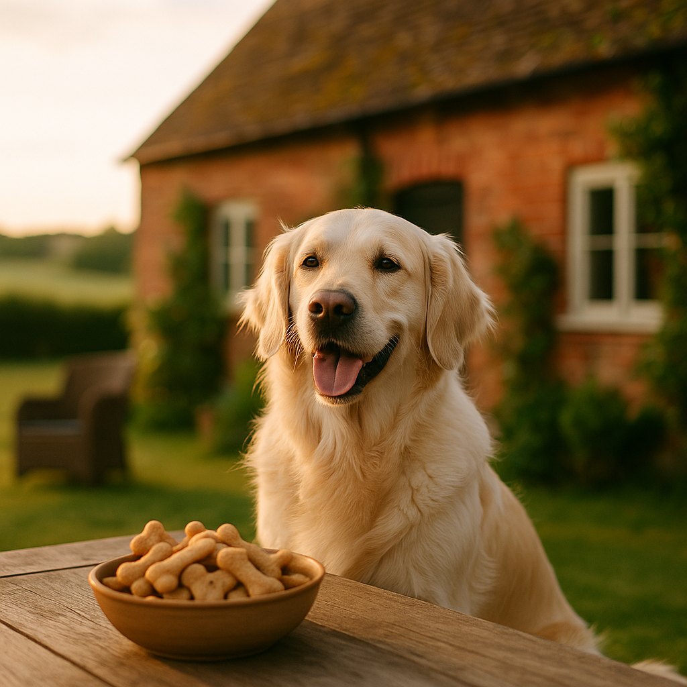

Homemade Dog Treat Recipes UK 2026: Vet-Approved Ideas Your Dog Will Love
Contents
- Why Make Homemade Treats Instead of Buying?
- Dog-Safe Ingredients and Ones to Avoid?
- Easy No-Bake Treats Ready in Minutes?
- Baked Biscuit Recipes for Everyday Rewards?
- Frozen Treat Ideas for Warm Weather?
- Treats for Dogs With Allergies or Sensitivities?
- Storing Homemade Treats Safely?
- Frequently Asked Questions
This article contains affiliate links. We may earn a small commission if you make a purchase, at no extra cost to you.
Homemade dog treats are exactly what they sound like: snacks you make yourself at home, using ingredients you can buy at any UK supermarket, without the preservatives, fillers, or mystery additives found in many commercial products. The short answer to whether they are worth making is yes, especially if your dog has sensitivities, you want to control exactly what goes in their mouth, or you simply enjoy spoiling them properly. This guide covers vet-approved recipes, dog-safe ingredients, and everything you need to get started in 2026, whether you have five minutes or an afternoon to spare.
According to Loyal & Loved, the biggest advantage of making your own treats is transparency: you know every single ingredient, every quantity, and exactly how it was prepared. That peace of mind is hard to put a price on, though we will also show you that homemade treats are often considerably cheaper than premium shop-bought alternatives.
Before you begin, a quick note: always introduce new foods gradually, and if your dog has a diagnosed health condition, speak to your vet before making significant changes to their diet. The recipes here are designed for healthy adult dogs unless otherwise stated.
Why Make Homemade Treats Instead of Buying?
Making your own dog treats gives you complete control over ingredients, cost, and quality, which is something no packet can truly offer. Commercial dog treats sold in the UK are regulated under the Feed (Hygiene and Enforcement) (England) Regulations 2005 and must meet certain safety standards, but they are not required to disclose precise ingredient proportions. That means a treat labelled "with chicken" may legally contain as little as 4% chicken, according to the Pet Food Manufacturers' Association (PFMA) guidelines on ingredient labelling.
Loyal & Loved found that a batch of 30 homemade oat and peanut butter biscuits costs roughly £1.50 to £2.00 to make using supermarket own-brand ingredients, compared to £4.00 to £7.00 for a comparable premium packet from brands like Lily's Kitchen or Burns. Over the course of a year, if you give your dog two or three treats a day, that saving adds up quickly.
There are other compelling reasons too:
- Allergy management: If your dog reacts to certain proteins, grains, or additives, you can design treats that avoid every single trigger ingredient.
- Freshness: Homemade treats made in small batches are genuinely fresher than products that may have sat in a warehouse for months.
- Bonding: There is something genuinely lovely about giving your dog something you made yourself. Mabel the Cockapoo, for one, is entirely unsubtle about preferring the kitchen when baking is happening.
- Portion control: You can make treats as small or as large as suits your dog's size and training needs.
For a broader look at the topic, our guide to homemade dog treats covers the background in more detail.
Dog-Safe Ingredients and Ones to Avoid?
Understanding which ingredients are safe and which are dangerous is the essential foundation of any homemade treat recipe. Some human foods that seem harmless are genuinely toxic to dogs, and the consequences of getting this wrong can be serious.
Ingredients that are safe and commonly used
The following ingredients are widely used in vet-approved dog treat recipes and are readily available in UK supermarkets. According to the British Veterinary Association (BVA), plain, minimally processed whole foods form the safest base for homemade dog food and treats.
| Ingredient | Notes | Approx. UK Cost |
|---|---|---|
| Rolled oats | Plain, unflavoured. A gentle fibre source suitable for most dogs. | £1.00 to £1.50 per 1kg |
| Peanut butter | Must be xylitol-free. Check every label, as some UK brands do use xylitol. | £2.00 to £3.50 per 340g jar |
| Pumpkin puree | Plain tinned pumpkin (not pie filling). Good for digestion. | £1.50 to £2.50 per tin |
| Sweet potato | Cooked and plain. High in fibre and beta-carotene. | £0.80 to £1.50 per 500g |
| Banana | In moderation due to natural sugar content. Dogs tend to love it. | £0.15 to £0.25 per banana |
| Carrot | Raw or cooked. Low calorie, good for teeth when raw. | £0.50 to £1.00 per 1kg bag |
| Plain chicken or turkey | Cooked, boneless, unseasoned. Lean protein source. | £3.00 to £5.00 per 500g breast |
| Eggs | Cooked. Good binder and protein source. | £1.80 to £2.50 per 6-pack |
| Plain wholemeal flour or rice flour | Useful for baked treats. Rice flour is grain-free friendly. | £1.00 to £2.00 per 1kg |
| Coconut oil | In small amounts. Use sparingly due to high fat content. | £3.00 to £5.00 per 500ml |
Ingredients that are toxic or harmful to dogs
The following must never be used in dog treats. This list is not exhaustive, and Loyal & Loved recommends checking with your vet if you are unsure about any ingredient not listed here. The Animal Poison Line (run by the Veterinary Poisons Information Service in the UK) can be reached on 01202 509000 if you suspect your dog has eaten something harmful.
- Xylitol (birch sugar): Found in some peanut butters, sugar-free sweets, and baked goods. Even small amounts can cause life-threatening hypoglycaemia in dogs. Always read labels.
- Chocolate: Contains theobromine, which dogs cannot metabolise. Dark chocolate and baking chocolate are especially dangerous.
- Grapes and raisins: Can cause acute kidney failure. The toxic compound has not been fully identified, which is why no amount is considered safe.
- Onions, garlic, leeks, and chives: All members of the Allium family damage red blood cells and can cause anaemia.
- Macadamia nuts: Toxic to dogs, causing weakness, vomiting, and hyperthermia.
- Nutmeg: Contains myristicin, which is toxic in larger quantities. Avoid entirely in baking.
- Avocado: Contains persin, which can cause vomiting and diarrhoea.
- Salt: In large quantities, salt causes sodium ion poisoning. Do not add salt to any dog treat recipe.
Easy No-Bake Treats Ready in Minutes?
No-bake treats are the quickest route to rewarding your dog with something homemade, and most require nothing more than a bowl, a spoon, and a few minutes. These are ideal for busy days or when you want a batch ready quickly before a training session.
1. Peanut Butter and Banana Balls
This is one of the most popular no-bake dog treats in the UK, and for good reason: dogs are wild about it, and it takes about five minutes to make.
Ingredients:
- 1 ripe banana, mashed
- 3 tablespoons xylitol-free peanut butter (brands like Whole Earth Original or PIP & NUT are xylitol-free as of 2026, but always check the current label)
- 120g rolled oats
Method: Mix all ingredients together in a bowl until combined. Roll into small balls roughly the size of a marble for small dogs or a grape for larger breeds. Place on a tray lined with baking paper and refrigerate for 30 minutes to firm up. Makes approximately 20 to 25 balls. Keeps for up to 5 days in the fridge.
Cost per batch: approximately £1.20 to £1.80.
2. Carrot and Cream Cheese Bites
Plain cream cheese (not flavoured or reduced-fat versions with artificial sweeteners) is safe for most dogs in small quantities. Combined with grated carrot, this makes a fresh, satisfying treat.
Ingredients:
- 2 medium carrots, finely grated
- 4 tablespoons plain full-fat cream cheese
- 100g oat flour (blitz rolled oats in a blender)
Method: Combine all ingredients until a dough forms. Roll into small cylinders or press into silicone moulds. Refrigerate for at least one hour before serving. Makes approximately 15 to 18 bites. These are best consumed within 3 days due to the dairy content.
If you want to use silicone moulds for neat shapes, silicone treat moulds on Amazon UK are widely available and typically cost £5 to £10 for a set.
3. Sardine and Oat Bites
Sardines tinned in water (not brine or oil) are a fantastic source of omega-3 fatty acids for dogs. According to a 2022 review published in the journal Frontiers in Veterinary Science, omega-3 supplementation in dogs is associated with improved coat quality and reduced inflammatory markers. This treat is low-cost and high-value nutritionally.
Ingredients:
- 1 tin sardines in spring water (approximately 95g drained), drained
- 150g rolled oats
- 1 egg, beaten
Method: Mash sardines thoroughly. Mix in oats and egg. Shape into small patties. These can be served as is or chilled for 30 minutes for a firmer texture. Refrigerate and use within 3 days. Makes approximately 12 patties.
Cost per batch: approximately £1.50 to £2.00.
Baked Biscuit Recipes for Everyday Rewards?
Baked dog biscuits last longer than no-bake treats because the low oven temperature draws out moisture, giving them a shelf life of one to two weeks at room temperature when stored properly. They are also the most satisfying to make, producing the kind of golden, crunchy results that feel genuinely rewarding for both dog and owner.
For a comprehensive collection, our guide to homemade dog biscuit recipes goes into even more detail on shaping, flour alternatives, and decoration ideas.
1. Classic Oat and Peanut Butter Biscuits
This is the gold-standard beginner recipe, simple, reliable, and universally loved. Luna the Golden Retriever would probably agree that these disappear fast.
Ingredients:
- 250g plain wholemeal flour (or rice flour for grain-free)
- 100g rolled oats
- 4 tablespoons xylitol-free peanut butter
- 2 eggs
- 60ml water
Method: Preheat your oven to 180°C (fan 160°C). Mix dry ingredients in a large bowl. Beat eggs and peanut butter together, then combine with the dry ingredients. Add water gradually until a firm dough forms. Roll out on a floured surface to approximately 5mm thickness. Cut into shapes using cookie cutters and place on a lined baking tray. Bake for 25 to 30 minutes until golden and firm. Allow to cool completely on a wire rack before serving. Makes approximately 30 to 40 biscuits depending on cutter size.
Cost per batch: approximately £1.50 to £2.50.
2. Sweet Potato and Chicken Biscuits
These are slightly more involved but excellent for dogs who are indifferent to peanut butter or need a higher-protein option. Sweet potato provides complex carbohydrates and vitamin A, while chicken adds lean protein.
Ingredients:
- 200g cooked sweet potato, mashed
- 150g cooked chicken breast, finely shredded or minced
- 200g rice flour
- 1 egg
Method: Preheat oven to 180°C (fan 160°C). Combine all ingredients into a dough. If the dough is too sticky, add a little more rice flour. Roll out, cut into shapes, and bake on a lined tray for 20 to 25 minutes until firm. Cool completely before storing. Makes approximately 25 to 35 biscuits.
Cost per batch: approximately £2.50 to £4.00.
3. Pumpkin and Cinnamon Biscuits
A small amount of plain ground cinnamon (not nutmeg, and not cinnamon blends) is safe for dogs in small quantities. According to the American Kennel Club's veterinary guidelines, cinnamon in small doses is non-toxic and may have mild anti-inflammatory properties, though it should never be given in large amounts. This recipe uses a small quantity purely for flavour.
Ingredients:
- 200g plain tinned pumpkin puree (not pie filling)
- 250g wholemeal flour
- 1 egg
- 1/4 teaspoon plain ground cinnamon
- 2 tablespoons coconut oil, melted
Method: Preheat oven to 175°C (fan 155°C). Mix all ingredients to form a dough. Roll out, cut into shapes, and bake for 30 to 35 minutes. Allow to cool fully before serving. These biscuits come out quite firm, which is ideal for dogs who need something to chew. Makes approximately 30 biscuits.
Cost per batch: approximately £2.00 to £3.00.
If you want to invest in proper dog-shaped cutters, a set of stainless steel bone and paw cutters typically costs £5 to £8 on Amazon UK and will last for years.
Frozen Treat Ideas for Warm Weather?
Frozen dog treats are a brilliant way to keep your dog cool and occupied during the UK's warmer months, and they are arguably the easiest category of all to make. Most frozen treats require no cooking whatsoever and can be prepared in silicone moulds or even ice cube trays.
As Loyal & Loved explains, the key with frozen treats is to use moulds or sizes appropriate to your dog. Tiny ice cube portions suit small breeds like Archie the Border Terrier, while larger lick-mat sized frozen portions work well for bigger dogs like Bear the Bernese Mountain Dog.
1. Peanut Butter and Banana Frozen Pops
Ingredients:
- 2 ripe bananas
- 3 tablespoons xylitol-free peanut butter
- 200ml plain, unsweetened Greek yoghurt (check no artificial sweeteners)
Method: Blend all ingredients together until smooth. Pour into silicone moulds or ice cube trays. Freeze for at least 4 hours or overnight. Pop out and serve one at a time. Store in an airtight container in the freezer for up to one month.
Cost per batch: approximately £2.00 to £3.00 for 15 to 20 portions.
2. Watermelon and Coconut Cubes
Watermelon is safe for dogs when the seeds and rind are removed. It is approximately 92% water, making it an excellent hydrating treat in summer heat. This recipe is especially good for dogs who are reluctant to drink enough water on hot days.
Ingredients:
- 200g seedless watermelon flesh, seeds removed
- 100ml coconut water (plain, unsweetened, no added sugars)
Method: Blend the watermelon until smooth. Mix with coconut water. Pour into ice cube trays and freeze overnight. Makes approximately 20 cubes.
Cost per batch: approximately £1.50 to £2.50.
3. Broth Lollies
A simple but effective favourite. Use a good-quality, low-sodium, unsalted chicken or beef stock. Many commercial stocks contain onion or garlic and must not be used. Instead, make your own by simmering a chicken carcass or beef bones in plain water for several hours, then straining and cooling.
Method: Pour the cooled, unseasoned broth into silicone moulds or ice cube trays. Add a small piece of cooked chicken or a carrot slice to each mould before freezing for extra interest. Freeze overnight. These are intensely popular with most dogs and cost almost nothing if you are already cooking chicken at home.
For dogs who enjoy licking, a silicone lick mat from Amazon UK (typically £8 to £15) can be spread with any semi-frozen mixture and placed in the freezer for a longer-lasting enrichment activity.
Treats for Dogs With Allergies or Sensitivities?
Dogs with food allergies or intolerances require treats that are free from their specific triggers, and homemade recipes are genuinely the best way to achieve this with confidence. According to the Royal Veterinary College (RVC), the most common food allergens in dogs include beef, dairy, wheat, egg, chicken, lamb, and soy, though any protein can theoretically trigger a reaction.
If your dog is undergoing a dietary elimination trial under veterinary supervision, do not introduce any new treats without checking with your vet first. An elimination trial requires strict dietary control, and even a small treat containing the wrong protein can invalidate weeks of testing.
For dogs with diagnosed sensitivities, the following recipes use novel or limited ingredients:
Single-Protein Turkey and Courgette Bites
Turkey is a less common protein and often suitable for dogs reacting to chicken or beef. Courgette is a low-allergen vegetable that is safe for dogs and very low in calories.
Ingredients:
- 200g cooked turkey mince, plain and unseasoned
- 1 medium courgette, grated and moisture squeezed out
- 100g rice flour
- 1 egg (omit if egg is a trigger; add a little extra water to bind)
Method: Combine all ingredients into a dough. Roll into small balls or press flat on a lined baking tray. Bake at 180°C (fan 160°C) for 20 minutes. Cool fully before serving. Makes approximately 20 to 25 pieces.
Grain-Free Sweet Potato Chews
For dogs with grain sensitivities, these are made entirely without flour. They are chewy rather than crunchy and take longer for the dog to consume, making them a good enrichment treat.
Ingredients:
- 2 large sweet potatoes
Method: Preheat oven to 120°C (fan 100°C). Slice sweet potatoes into strips approximately 5mm to 8mm thick. Lay on a lined baking tray and bake for 2.5 to 3 hours, turning halfway, until they are leathery and dried out but not brittle. These are genuinely just dehydrated sweet potato and nothing else. Cool and store in an airtight container. Makes a large batch for approximately £1.00 to £1.50 in ingredients.
For dogs with complex or multiple food allergies, it may be worth exploring specialist limited-ingredient commercial treats alongside homemade options. Barking Heads and Meowing Heads offer limited-ingredient options worth considering, and AATU Dog Food uses a single-protein approach that some owners find helpful as a starting reference for identifying safe proteins.
Our guide to healthy puppy treats also covers sensitivity-appropriate options for younger dogs.
Storing Homemade Treats Safely?
Storing homemade dog treats correctly is essential to prevent spoilage and protect your dog's health. Unlike commercial treats, homemade versions contain no preservatives, so they have a shorter shelf life and require more careful handling.
As Loyal & Loved explains, the storage method you need depends entirely on the type of treat and its moisture content. Here is a straightforward guide:
| Treat Type | Storage Method | Shelf Life |
|---|---|---|
| Baked biscuits (low moisture) | Airtight container at room temperature | 1 to 2 weeks |
| No-bake soft treats | Airtight container in the fridge | 3 to 5 days |
| Treats with meat or dairy | Airtight container in the fridge | 2 to 3 days |
| Frozen treats | Sealed freezer bag or airtight container in the freezer | Up to 1 month |
| Dehydrated chews (e.g. sweet potato) | Airtight container at room temperature | 1 to 2 weeks |
A few additional points worth following:
- Label your batches: Write the date on a piece of masking tape stuck to the container. It is surprisingly easy to forget when you made something.
- Check for mould before serving: Even if a treat is within its expected shelf life, always check it looks and smells normal before giving it to your dog.
- Cool completely before storing: Placing warm baked treats in an airtight container creates condensation and accelerates mould growth. Always allow treats to cool fully on a wire rack first.
- Freeze in small batches: Rather than freezing everything together, freeze treats in portion-sized batches so you only defrost what you need.
- Use food-grade containers: Basic clip-top glass jars or BPA-free plastic containers work well. A set of airtight glass storage jars from Amazon UK typically costs £10 to £20 and is a worthwhile investment if you plan to bake regularly.
If you notice your dog having an unusual reaction after eating homemade treats, such as vomiting, loose stools, itching, or lethargy, stop offering that batch immediately and contact your vet. Keep any remaining treats so your vet can advise based on what was in them.
Frequently Asked Questions
Are homemade dog treats safe for my dog in the UK?
Yes, homemade dog treats are safe provided you use dog-safe ingredients and follow basic food hygiene practices. The key risks come from using toxic ingredients such as xylitol, chocolate, grapes, onions, or garlic, all of which must be avoided completely. Treats should also be stored correctly and offered in moderation. If your dog has a health condition, check with your vet before introducing new homemade treats.
Do homemade dog treats need to be approved by a vet?
There is no legal requirement in the UK for homemade dog treats to be vet-approved, but it is sensible to use recipes that have been reviewed by veterinary professionals, especially if your dog has allergies or health issues. The recipes in this guide are based on ingredients and combinations consistent with guidance from the British Veterinary Association (BVA) and the Royal Veterinary College (RVC). Always consult your vet if you are in any doubt.
What is the best flour to use in homemade dog biscuits in the UK?
Plain wholemeal flour is a popular and affordable choice for most dogs without grain sensitivities. It is widely available in UK supermarkets for approximately £1.00 to £1.50 per kilogram. For grain-free recipes, rice flour is the most widely used alternative and produces a similar biscuit texture. Oat flour, made by blending rolled oats, is another good option and is very easy to prepare at home.
How many homemade treats can I give my dog per day?
Treats of any kind, homemade or commercial, should make up no more than 10% of your dog's total daily calorie intake. This is the standard guidance from the British Veterinary Association and most veterinary nutritionists. The exact number of treats depends on your dog's size, weight, and activity level. For a 10kg dog with a daily calorie requirement of roughly 400 to 500kcal, that means treats should contribute no more than 40 to 50kcal per day. Small training treats of around 1 to 2kcal each allow more repetitions without exceeding this.
Can I make homemade treats for a puppy?
Yes, but puppies have different nutritional needs to adult dogs and more sensitive digestive systems. Stick to simple, plain ingredients such as cooked chicken, sweet potato, or oats, and keep portions very small. Avoid high-fat ingredients like peanut butter in large quantities. Our guide to healthy puppy treats covers age-appropriate options in more detail, and it is always worth checking with your vet when introducing new foods to a young dog.
Can I freeze homemade dog biscuits to make them last longer?
Yes, absolutely. Baked dog biscuits freeze very well and will keep for up to three months in a sealed freezer bag or airtight container. Allow them to thaw at room temperature for 20 to 30 minutes before serving. This is a practical approach if you want to bake in large batches and use treats gradually over time. Freezing is particularly useful for treats containing meat or eggs, which have a short fridge life of only two to three days.